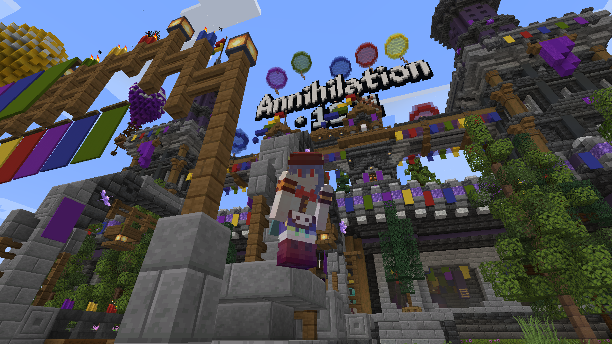

MinecraftのAnnihilationで学ぶ戦術と哲学
はじめに
「Annihilation」はMinecraft Java Editionの公開サーバー「Shotbow」が運営する集団対戦型のゲームです。最大30人の4チームは互いに敵陣のnexus（コア）の破壊を目指しながら自陣を守護しなければならない、まさに「殲滅」を掛けた戦争です。マップに存在する資源から武器や防衛を用意したり、様々な戦術に特化したclass（職業）を活用したりと、複雑な要素で勝負が左右されます。
初見の方や当時の記憶が薄れている方は、この記事を読む前に「us.shotbow.net」からプレイすることをお勧めします。海外のサーバーですが簡単な英語でも意思疎通が可能なうえ、そもそも日本語のレスバが飛び交うぐらいに日本人が多いので、気軽に参加できると思います。
私は2016年頃に少しだけ遊び、すぐに離れてしまいましたが、最近になり再びプレイしたところ、ド嵌りしてしまいました。それはゲーム自体が面白いという理由以外にも、自由度が高い集団対戦型のゲームに潜む哲学を感じられるという点にあります。今回は、そんな私が半年間で学んだ一部を実体験と交えながら紹介したいと思います。
勝利の鍵は団結と先手
勝利には様々な要因がありますが、最も大きな要因はチームの団結力です。あまりにもベタすぎる説得力の薄い言葉ですが、大規模な集団戦を行うことで「小さな要因の積み重ねが大きな確率を左右する」という原則を実感することができます。正直な話、クラン（ボイスチャット等で連携するチーム）に勝つことはできません。序盤にポーションを飲みながらrush（計画的なnexusの破壊）を仕掛けるプレイヤーの半数以上はクランです。リストに似たような名前が連なるチームを見掛けたときは、最後にrushが来ることを願うしかありません。移動や作業の時間を減らすために徹底的な分業を行うことで早い段階から強くなり、それは口頭でチームを統制できるクランの得意技です。
しかし、クランではないチームでも確かな勝利を得ることはできます。0か1で勝率が大きく変わる役割も多く、例えばnexusを防衛する、壁を建設する、中央のmid（採掘場）の移動手段や安全を確保する、リンゴや金を集めるなど、特に自分だけが持つclassは最大限に活用しましょう。華がない役割でも、チームが勝利するためには欠かせられません。逆に、ダイヤモンドの装備を手に入れた自身がrushをする場合は味方の恩恵に感謝しましょう。
このゲームは先手必勝が顕著であり、phase 3の最初にmidを占拠したチームが80%の確率で勝ちます（もちろん、phase 2 rushやsky bridgeが来た場合は別ですが）。剣や弓、防具の良し悪しはマッチポンプになりやすく、準備が早いほど敵陣よりも有利な装備が揃うため、その最大の要因となるダイヤモンドは何としても我先に独占する必要があります。そして、その為には団結が必要です。
数の暴力は下剋上の要
敵と遭遇したとき、その勝敗を決めるのは装備と技術です。しかし、多少の差であれば味方の数が大きく左右します。例えば鉄フルの敵がいたとき、1人の皮フルが立ち向かうのは愚行ですが、3人の皮フルであれば勝利の見込みがあります。特にclassの組み合わせ次第では装備や技術の差を埋められることもあり、実際に私も皮フルのMercenaryと鉄フルとWarriorで1人のダイヤフルに打ち勝った経験があります。
裏を返せば、自分が強い装備であろうと単独行動は危険です。金の採掘や奇襲といったリスクが高い行動を取る場合、少なくとも逃げ道（TransporterやDasher、Scout）を確保する必要があります。最も安全なのは、一人がTransporterで拠点と現地を繋ぎ、その他のプレイヤーが状況に最適なclassで動くことです。一人は行動に多少の制限が掛かりますが、高価な装備や資源を盗られるリスクのためには背に腹は代えられません。
前述したように集団で戦うゲームなので、その優位性を維持するために率先して心強い仲間と共に行動しましょう。
情報が戦況を一変させる
皆様はチャットに注目していますか？ 現実の戦争や社会が一つの情報で左右されるように、このゲームはメッセージやキルログすらも重要な判断材料となります。透明凸を見掛けたとき、それを報告するだけで皆が自陣を警戒してくれます。逆に透明凸をする場合、敵陣のキル頻度やclassを確認することで侵入しやすいチームを推測できます。rushの前兆はないか、危険な場所はないか、様々な情報をチャットから得るだけで、高いリスクを犯すことなく行動できるのです。
中途半端に逃げてはならない
敵と遭遇したとき、まずは状況から判断しましょう。その敵と戦う必要はあるのか、その敵は自分よりも強い装備か、立地は自分に有利か、勝つと何を得るのか、負けると何を失うのか。そして、戦うのか逃げるのかを決めましょう。自分や味方が有利になる資源があれば戦い、少しでも敗因に繋がる要素があれば逃げるのが賢明です。
逃げるふりをして相手を追い込む戦法もありますが、絶対に避けるべき選択は戦いの途中で無理に逃げることです。互いに体力が削れている状態で背中を向けてしまえば相手の一方的な有利になり、何より「自分の好ましくない状況」を察知されることで更に追い込まれます。たとえ負けそうでも、弱気にならず最後まで戦いましょう。思わぬ結果が待ち受けている場合もあり、少なくとも逃げるよりは勝率が高くなります。